install.packages("terra")Week 12: Geospatial Data
Geospatial Data
Introduction
Geospatial data are data that have some connection to specific places or areas on Earth. In this lesson we will look at common geospatial data types and how we can work with them in R. We will really be scratching the surface today and you can find links to more resources at the end of the lesson.
Setup
To work with geospatial data in R, we usually need to install one or more additional packages. The two most popular packages for geospatial data are terra and sf. In this lesson, we will only be working with terra, and you can find links for more information on terra and on sf at the bottom of the lesson. In order to use the terra package, we must first install the package with install.packages():
And we load it into memory with the library() command:
library(terra)Some Terms
Geospatial data generally come in one of two types: raster data or vector data.
- Raster data are gridded data. They generally look like images and have a fixed resolution. This means that as you zoom in on raster data, you eventually start seeing the grids. Like when you zoom in on a photograph and it becomes “pixelated” - we will see an example of this later. Raster data are usually quantitative measurements of some sort, such as temperature, precipitation, and reflectance in certain light wavelengths.
- Vector, or shape, data are defined by specific coordinates on the Earth’s surface and do not, technically, have a fixed resolution. This means that as you zoom in on Vector data, it never becomes “pixelated”. Vector data usually take the form of points (a single pair of coordinates), lines (two or more coordinate pairs connected in a sequence), or polygons (three or more coordinate pairs connected in a closed sequence). Note: I apologize at this point for any confusion between the definition of geospatial vector data and the vector data structure in R. They are not the same thing, even though they probably have similar roots.


Today’s Destination
Today we will work with both raster and vector data, loading it into R, doing some exploratory visualization, and modifying the data. Ultimately, we are going to create a map of temperature data of southwestern North America, highlighting those areas that are desert biomes. At the end, we should have a map that looks like:

Geospatial Raster Data
Reading and Visualizing Raster Data
To read raster data into R, we use the rast() function from the terra library; if you see an error that says something like Error in rast("global_temperature.tif") : could not find function "rast", it probably means you need to load the terra library with library(terra).
temp <- rast("data/global-temperature.tif")Note: All the data we will use in this lesson come from the WorldClim site.
With raster data, they will all (ideally) contain metadata - we can see those metadata by running a line of code with the name of the variable that that we read the raster into:
tempclass : SpatRaster
size : 4320, 8640, 1 (nrow, ncol, nlyr)
resolution : 0.04166667, 0.04166667 (x, y)
extent : -180, 180, -90, 90 (xmin, xmax, ymin, ymax)
coord. ref. : lon/lat WGS 84 (EPSG:4326)
source : global-temperature.tif
name : global-temperature
min value : -54.75917
max value : 31.16667 So there is a lot packed into the output. For our reality check, we will just note that the data are global (see the values in the “extent” field) and the range of values for mean annual temperature seem right (see the “min value” and “max value” fields).
But come on! We are here for maps. Let us see a map! We can plot the actual data stored in the raster with the plot() command.
plot(temp)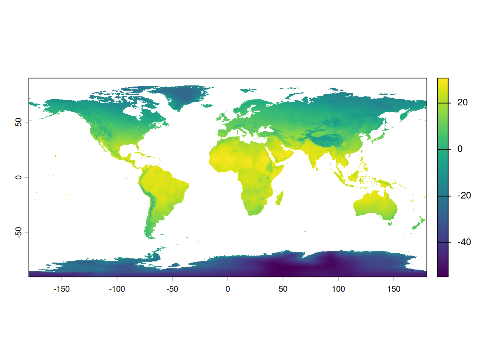
Aside: plot() actually means a lot of different things.
A quick note that when we call plot(), R will take a look at what information we passed to the function, then decide which version of the plot() function to use. We will not go into additional detail here, but consider looking at the documentation for the base R version of plot() (via ?plot) and comparing that with the version that comes with the terra package (via ?terra::plot).
Cropping data
Rarely do we need a map of the entire globe. Rather, we often want to focus on parts of the globe. In this lesson we are going to focus on southwestern North America, so we need to crop our raster data to that region. In order to do this we first define what is called a geographic extent. This is basically a fancy way of drawing a line around the area we are interested in. In our case, we need to define the geographic limits of what we are calling the southwest; i.e. the easternmost, westernmost, southernmost, and northernmost points.
Question: how would you find the latitude and longitude values to define this extent?
For this lesson, we can get away with using whole degree values; we will use decimal degrees later in the lesson. When defining an area with four values (easternmost, westernmost, etc.), we need to be sure to get them in the right order. Often (but not always), they are in the following order:
- xmin = westernmost
- xmax = easternmost
- ymin = southernmost
- ymax = northernmost
# Lower right: 21, -98
# Upper left: 46, -126
southwest_ext <- ext(c(-126, -98, 21, 46))You will also note that we used negative values for those western hemisphere longitudes (-126, -98). The same goes for values in the southern hemisphere.
Question: Why would we use negative values instead of the letters W and S for western longitudes and southern latitudes, respectively?
We can do a reality check and print out the value by running the name of the extent.
southwest_extSpatExtent : -126, -98, 21, 46 (xmin, xmax, ymin, ymax)Finally, we can make a new map, with only those values in the area we defined by our geographic extent with the crop() function from terra.
temp_sw <- crop(temp, southwest_ext)We can then compare the objects of our original raster:
tempclass : SpatRaster
size : 4320, 8640, 1 (nrow, ncol, nlyr)
resolution : 0.04166667, 0.04166667 (x, y)
extent : -180, 180, -90, 90 (xmin, xmax, ymin, ymax)
coord. ref. : lon/lat WGS 84 (EPSG:4326)
source : global-temperature.tif
name : global-temperature
min value : -54.75917
max value : 31.16667 to the cropped raster:
temp_swclass : SpatRaster
size : 600, 672, 1 (nrow, ncol, nlyr)
resolution : 0.04166667, 0.04166667 (x, y)
extent : -126, -98, 21, 46 (xmin, xmax, ymin, ymax)
coord. ref. : lon/lat WGS 84 (EPSG:4326)
source(s) : memory
varname : global-temperature
name : global-temperature
min value : -4.245667
max value : 27.129499 Just about all the data changed, with the exception of the value in the coord. ref. field. We will talk more about that field later.
Let us look at the map of our cropped data, again with the plot() function.
plot(temp_sw)Modifying data
The really nice thing about modern geospatial package in R is that we can do operations on every cell of the data. For example maybe we want to convert our temperature values from Celsius to Fahrenheit.
Question: For our cropped data, how many calculations would this conversion require?
A reminder of the formula for converting Celsius to Fahrenheit:
\[ F = (C \times \frac{9}{5}) + 32 \]
# (C * 9/5) + 32 = F
temp_sw_f <- (temp_sw * 9/5) + 32And plotting the data, the image looks the pretty much the same, but note the scale is different:
plot(temp_sw_f)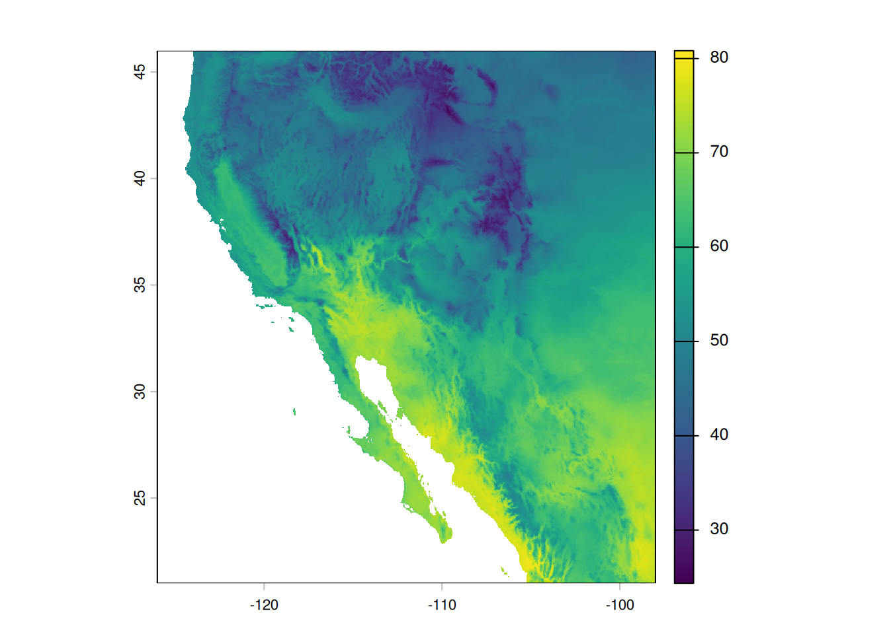
Aside: The world is not flat, so why is my map?
Question: What are some differences between the map we see on our screen and reality?
The process of taking the three-dimensional shape of the Earth and presenting it in a two-dimensional format (i.e. a map) is called projection and there are several ways of doing this. And when I say several, I actually mean infinite. From the Wikipedia page on map projections: “Because there is no limit to the number of possible map projections, there can be no comprehensive list.” However, there are common ones that you should probably stick to.
When working in R, the coordinate reference system describes how the three- dimensional data are transformed into two-dimensional space.
Let us look once more at our cropped temperature raster metadata.
temp_swclass : SpatRaster
size : 600, 672, 1 (nrow, ncol, nlyr)
resolution : 0.04166667, 0.04166667 (x, y)
extent : -126, -98, 21, 46 (xmin, xmax, ymin, ymax)
coord. ref. : lon/lat WGS 84 (EPSG:4326)
source(s) : memory
varname : global-temperature
name : global-temperature
min value : -4.245667
max value : 27.129499 Specifically, we see the value in the coord. ref. field is
lon/lat WGS 84 (EPSG:4326)
Without going into too much detail, this tells us it uses the World Geodetic System 84 reference system with latitude and longitude. This is a pretty good one to use as long as your maps aren’t super close to the poles. All projections from three-dimensional space to two-dimensional space result in some distortions, and this one really stretches out area near the poles. You can see this in action by plotting your original map:
plot(temp)
Look at Antarctica! It’s huge!
We can change the way our map looks by re-projecting the raster. That is, we make a new object in R that uses a different coordinate reference system. You might have noticed in the coord. ref. field that there was the extra bit of text in parentheses: “(EPSG:4326)”. Thankfully there is a set of unique identifiers for all the different coordinate reference systems and we can use those identifiers to re-project our data. These identifiers all start with the letters “epsg” and end with a series of four to five numbers.
As an example, we can re-project our southwest temperature data to a projection that does not distort the area quite as much. We do this with the terra function project() and then plot the result:
temp_sw_reproject <- project(temp_sw, "epsg:5070")
plot(temp_sw_reproject)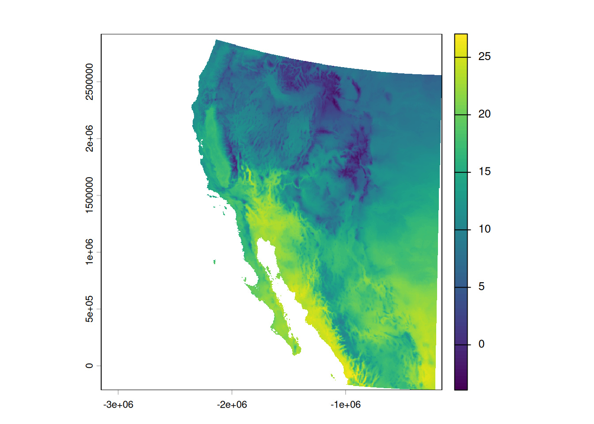
Question: What is the name of the coordinate system that EPSG 5070 refers to?
Colors on maps
So, we have a map, but these colors make me think of elevation, not temperature, so how can we change this? Let’s start by looking at the documentation one of the functions for creating color palettes, called rainbow():
# Brings up R documentation for some color palettes
?rainbowThis actually brings up documentation for a bunch of palettes, but looking at the entry in the Usage section for rainbow(), we see that we need to give it a value for the number of colors, n. Let us try passing the rainbow palette to the plot function, giving it fifty colors:
plot(temp_sw, col = rainbow(n = 50))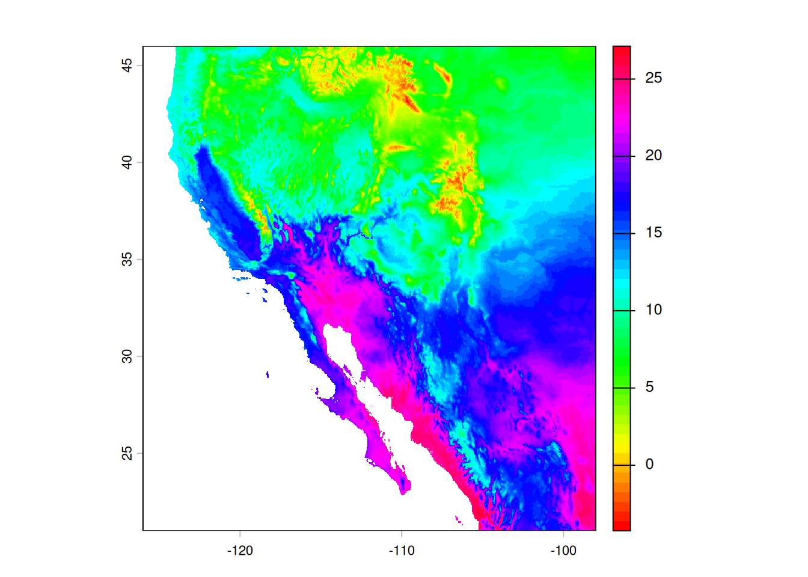
Well, the colors changed, but I would not say for the better. In fact, when I go about making decisions about colors, my go-to resource is ColorBrewer at https://colorbrewer2.org.
You can click through the options and it will display the different palettes. For our purposes, the Yellow-Orange-Brown palette (“YlOrBr”) should work well. To see the name of the palette, look just to the left of the “EXPORT” tab:

To use these palettes, we replace the rainbow() function with the hcl.colors() function, and indicate which palette we want through the palette argument:
plot(temp_sw, col = hcl.colors(n = 50, palette = "YlOrBr"))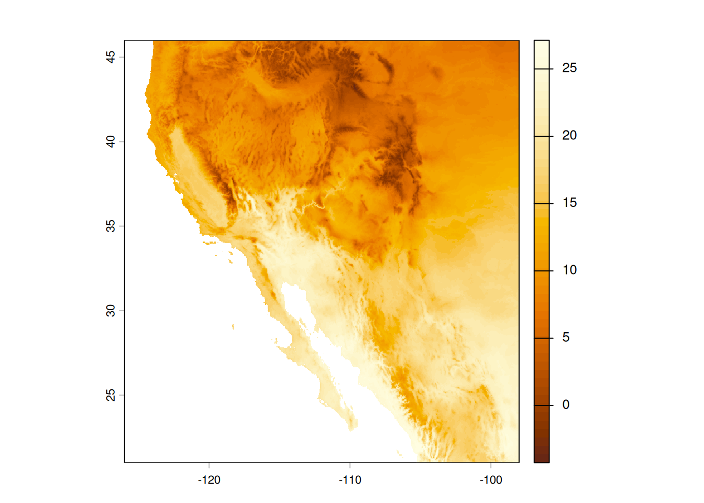
This is close, but I’d rather reverse the scale, so darker colors indicate hotter temperatures. I am going to create a variable that stores these colors so I do not have to keep writing out the hcl.colors() specification.
temp_cols <- rev(hcl.colors(n = 50, palette = "YlOrBr"))
plot(temp_sw, col = temp_cols)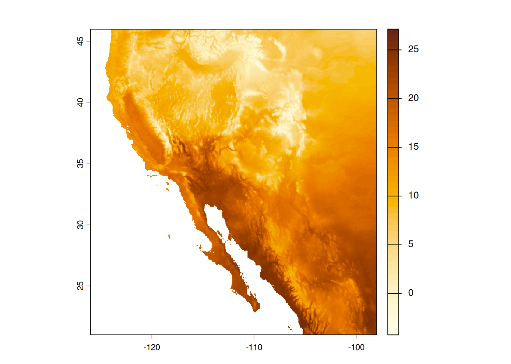
Question: What are the values stored in the
temp_colsvariable?
Geospatial Vector Data
Now we will switch to vector data, which are all based on coordinates. These data commonly come as points (a single pair of coordinates), lines (multiple pairs of coordinates), or polygons (multiple pairs of coordinates that define a geographical area).
Adding Points
Let us create a data frame with some city coordinates that we can add to the map.
cities <- data.frame(city = c("Tucson", "Hermosillo", "Carson City"),
lat = c(32.23, 29.02, 39.18),
lon = c(-110.95, -110.93, -119.77))
cities city lat lon
1 Tucson 32.23 -110.95
2 Hermosillo 29.02 -110.93
3 Carson City 39.18 -119.77To make these data easier to work with our raster object, we are going to transform it to a spatial vector, or SpatVector in terra-speak. While we are at it, we will tell it to use the same coordinate reference system as the temperature data we already loaded in.
cities_vect <- vect(cities, crs = crs(temp_sw))Looking at the SpatVector object, it doesn’t really look very different.
cities_vect class : SpatVector
geometry : points
dimensions : 3, 1 (geometries, attributes)
extent : -119.77, -110.93, 29.02, 39.18 (xmin, xmax, ymin, ymax)
coord. ref. : lon/lat WGS 84 (EPSG:4326)
names : city
type : <chr>
values : Tucson
Hermosillo
Carson CityNow we can make our map and add those points to the map. Make sure to use add = TRUE in our second call to plot() so it adds the points to the already existing map.
plot(temp_sw, col = temp_cols)
plot(cities_vect, add = TRUE)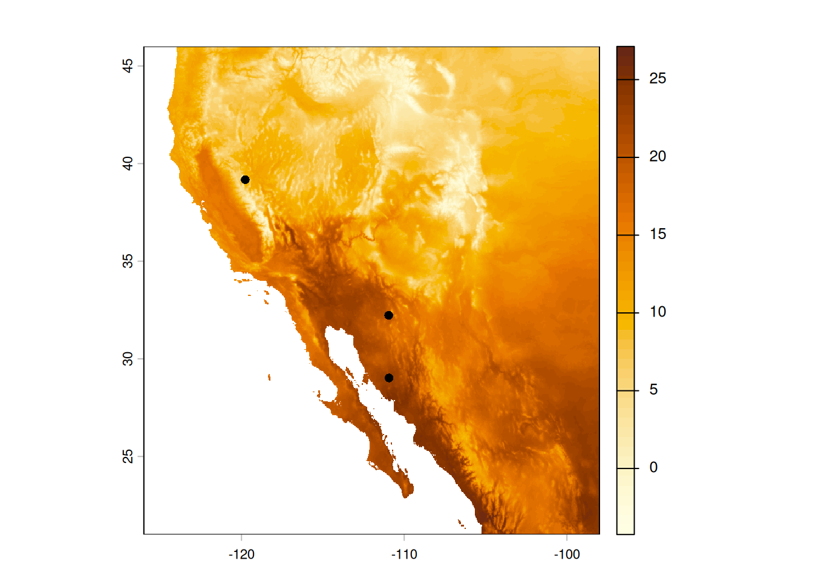
Finally, because we stored the names of the cities in our data frame, we can also add those.
plot(temp_sw, col = temp_cols)
plot(cities_vect, add = TRUE)
text(cities_vect, labels = "city", pos = 4)Adding Areas (aka Polygons)
What if we want to add areas, not just points, to our map? Here is where we get into the realm of polygons. We can do things like add polygons from shapefiles that we download or export from a program like ArcGIS. For this lesson, though, we are going to make a polygon on the fly and add that to our map.
Going back to our original goal of a map highlighting desert biomes, we will define a desert as an area that receives less than 250 millimeters of precipitation per year (Aside: this definition only goes so far; for example, the city of Tucson does not, technically, get counted as being a desert because it receives an average of 300 mm of precipitation per year. You can read more about defining deserts on Wikipedia).
So we start by loading in a file with global precipitation data:
prec <- rast("data/global-precipitation.tif")
precclass : SpatRaster
size : 4320, 8640, 1 (nrow, ncol, nlyr)
resolution : 0.04166667, 0.04166667 (x, y)
extent : -180, 180, -90, 90 (xmin, xmax, ymin, ymax)
coord. ref. : lon/lat WGS 84 (EPSG:4326)
source : global-precipitation.tif
name : global-precipitation
min value : 0
max value : 11246 Then cropping those data to the North American southwest (that we defined above).
prec_sw <- crop(prec, southwest_ext)
prec_swclass : SpatRaster
size : 600, 672, 1 (nrow, ncol, nlyr)
resolution : 0.04166667, 0.04166667 (x, y)
extent : -126, -98, 21, 46 (xmin, xmax, ymin, ymax)
coord. ref. : lon/lat WGS 84 (EPSG:4326)
source(s) : memory
varname : global-precipitation
name : global-precipitation
min value : 45
max value : 3184 And it is usually good to do a reality check and plot the data, too:
plot(prec_sw)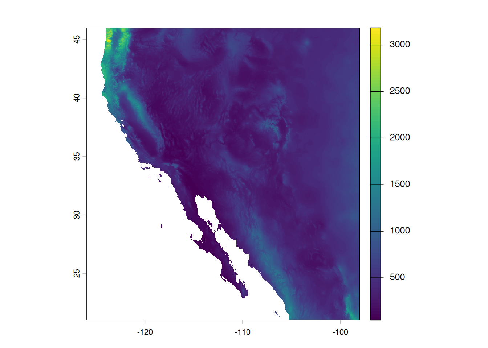
Cool. Map looks good and the ranges of precipitation seem reasonable, too. Now we need to use this information to identify those areas considered deserts. We will use this categorization to draw an outline of desert biomes on our temperature map. As we talked about before, we will use the precipitation-based definition of a desert, where any spot that received less than 250 mm in annual precipitation is categorized as a desert. We start by defining our cutoff and then creating a new raster based on values in the precipitation raster.
desert_max <- 250
prec_desert <- prec_sw < desert_max
prec_desertclass : SpatRaster
size : 600, 672, 1 (nrow, ncol, nlyr)
resolution : 0.04166667, 0.04166667 (x, y)
extent : -126, -98, 21, 46 (xmin, xmax, ymin, ymax)
coord. ref. : lon/lat WGS 84 (EPSG:4326)
source(s) : memory
varname : global-precipitation
name : global-precipitation
min value : FALSE
max value : TRUE Looking at the raster metadata, we see the big difference is the min and max values - they aren’t numbers anymore, but are now logicals (FALSE and TRUE). This is because what we stored in the prec_desert object was the output of a comparison. That is, for each cell in our southwest precipitation raster, prec_sw, we asked if the value in that cell was less than 250 mm. The answer is either TRUE or FALSE, so that is what is stored in the resulting output raster, prec_desert. We can also see this when we plot the output:
plot(prec_desert)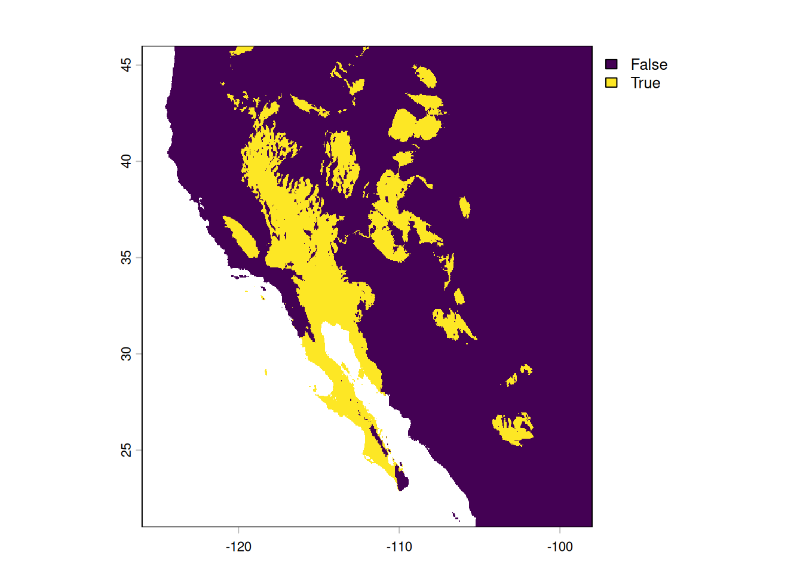
The areas that are lighting up in green are those “desert” biomes. For now, we are going to ignore the limitations of our precipitation-based definition (i.e. the southern portion of the Central Valley of California is not generally considered a desert).
To add this to our map, though, we do not want a logical raster, rather, we want a polygon, in order to draw a border around the deserts. We start by changing all the FALSE values to missing (NA) - if we did not do this, R would make two polygons from the data, one for desert areas and one for “not desert” areas. We then use the as.polygons() function to do the transformation and plot the polygon alone as a reality check.
# Change all FALSE values to missing data
prec_desert[!prec_desert] <- NA
# Convert remaining non-missing values to a polygon (vector data)
desert_poly <- as.polygons(prec_desert)
# Plot polygons (reality check)
plot(desert_poly)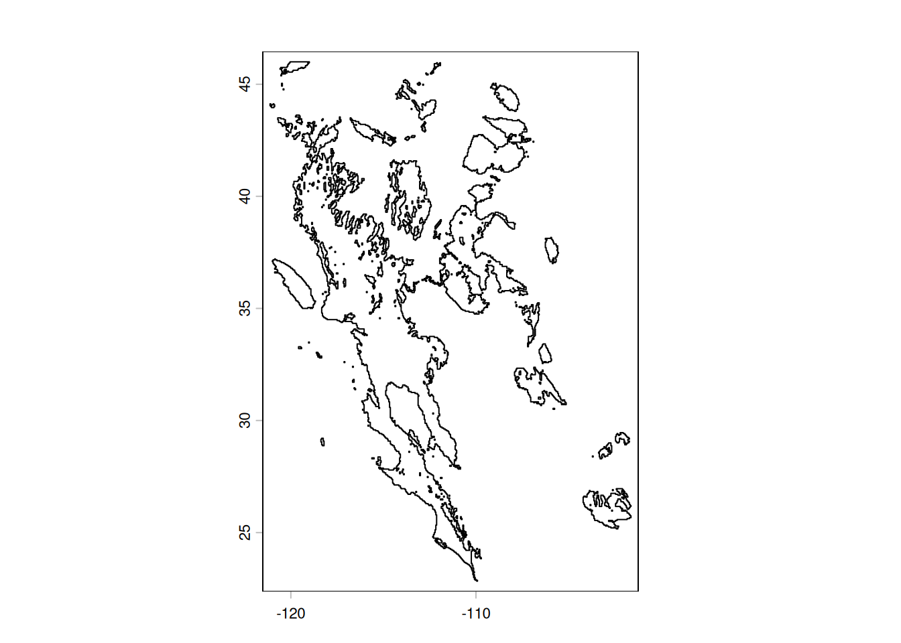
Looking good! Now we can plot our temperature map again and add the polygon to the map. Feel free to experiment with arguments to change the colors and transparency of the desert polygon (hint: look at the documentation for the polys() function via ?polys for details on how to do this).
# Plot base temperature map
plot(temp_sw, col = temp_cols)
# Add desert polygon
polys(x = desert_poly)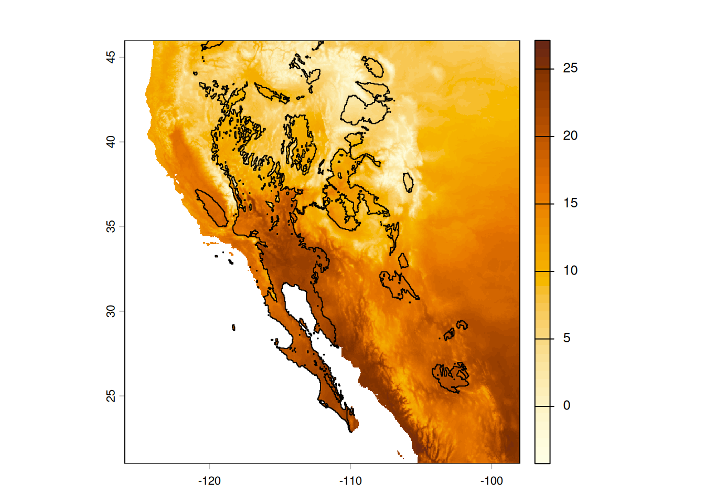
Finally, because we are being pedantic, let us make the plot again, this time adding a title explaining what the colors mean (“00B0” is Unicode for the degree symbol).
plot(temp_sw, col = temp_cols,
main = "Mean Annual Temperature (\u00B0C)")
polys(x = desert_poly)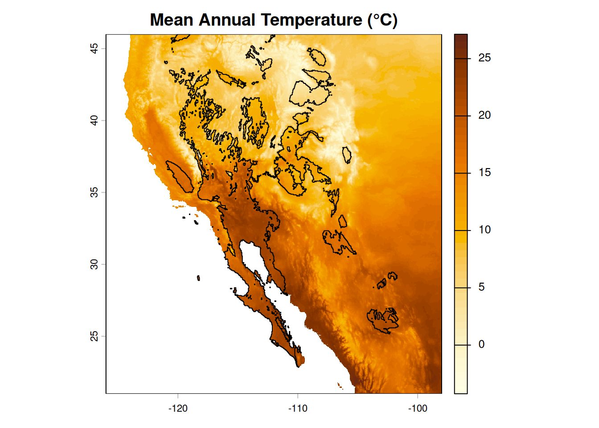
And if you are inclined, you can output this map by wrapping all the plotting commands within a call to one of the graphics device functions (e.g. png(), pdf()) and then turning off this graphical redirect with dev.off().
png(filename = "sw-desert-heat.png")
plot(temp_sw, col = temp_cols,
main = "Mean Annual Temperature (\u00B0C)")
polys(x = desert_poly)
dev.off()Glossary
These are the functions we used in this lesson; use the ? in R to find more details (e.g. ?rast). The following are from the terra package:
as.polygons: Convert a raster object into a polygon (shape) object.crop: Crop the geographic extent of a raster.ext: Create a SpatExtent (spatial extent) object.plot: Um, plot?polys: Add polygons to an existing plot.project: Change the projection of a geospatial object.rast: Read in a raster file (rast()does more than this, too, but this is what we used it for here).text: Add text to an existing plot.
And we used a few from base R, too:
dev.off: Stop writing to a graphics output file.hcl.colors: Create a vector of color values based on a palette.png: Start writing to a PNG graphics file.rainbow: Create a vector of unicorn-vomit colors.rev: Reverse the order of values in a vector.
Other Resources
- A really nice guide to using terra in R.
- A cheat-sheet of sorts for terra functions.
- The sf package is another way to work with geospatial data in R. It offers a lot of functionality and works well (most of the time) with terra objects.
- The OpenStreetMap (OSM) project also has an R package, osmdata, that allows you to download and use data available from OSM.
- To really impress your friends, the tidyterra package offers functions for using terra objects (SpatRasters, SpatVectors, etc.) with the ggplot2 package.
- For a more in-depth look at geospatial applications in R, check out the Data Carpentry lesson introducing raster & vector data in R.